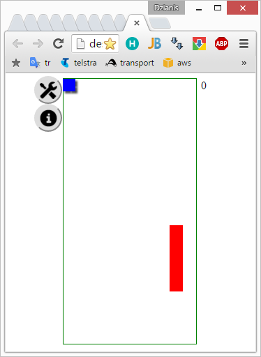

Play Tetris

A classic tetris implemented as a client-side application.
Rules are simple - create a whole row of bricks to make it disappear.
Use keyboard to play on a desktop PC. If you are using a mobile device - a set of additional
buttons will appear.